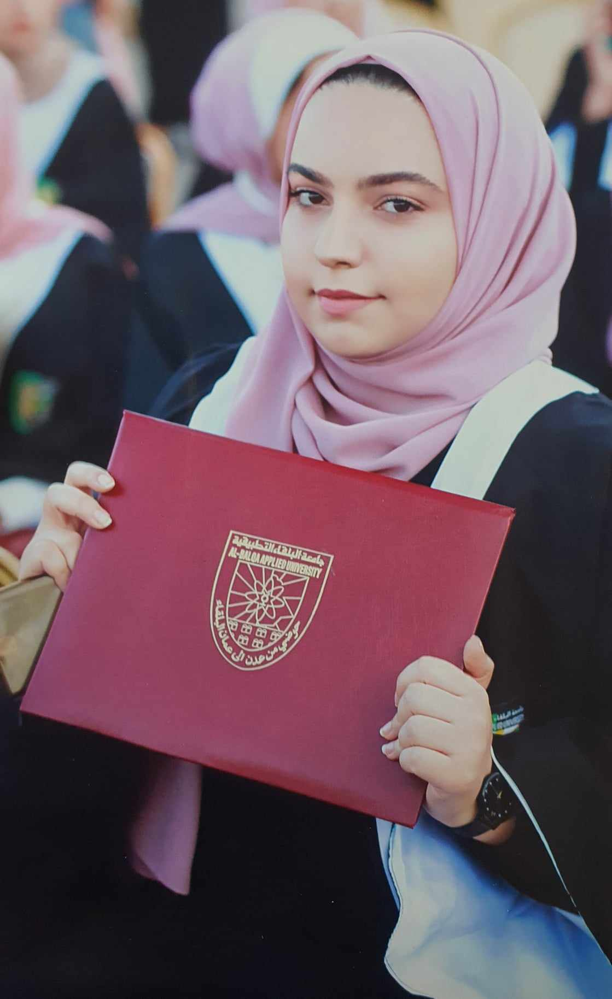

Hello my name is Farah I'm 25 years old and I live in Jordan. I graduated from AL-Balqa' Applied University with a degree in Psychological and Educational Counseling. I love learning programming and architectural drawing.
Amman, the capital of Jordan, is a vibrant city nestled in the heart of the Middle East. Renowned for its rich history and modernity, Amman offers a captivating blend of ancient ruins, bustling markets, and contemporary architecture. As a hub of culture and commerce, it serves as a gateway to Jordan's many attractions, including the ancient city of Petra and the breathtaking landscapes of Wadi Rum. With its warm hospitality and diverse population, Amman welcomes visitors from around the world to experience its unique charm and hospitality.